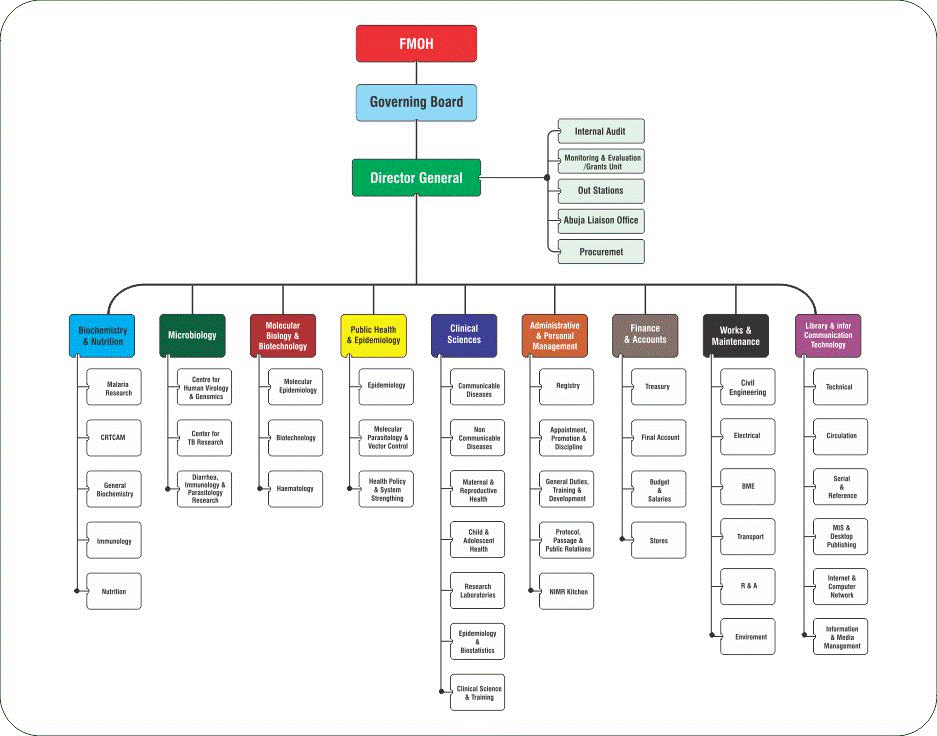

An externship is an experiential learning opportunity whereby students receive practical work experience. I did my externship at the Department of Public Health, Nigerian Institute of Medical Research.
Public Health Department in Nigerian Institute of Medical Research is a department under the Federal Ministry of Health. They are charged with the responsibility of conducting epidemiological, social and laboratory-based research on diseases.
To be an institution of excellence in basic, applied, and operational research for the promotion of national health and development.
To conduct research into diseases of public health importance in Nigeria and develop structures for the dissemination of research findings while providing the enabling environment and facilities for health research and training in cooperation with the federal and state ministries of health and in collaboration with universities, allied institutions and organized private sector nationally and internationally.
The mandate of the Institute under the enabling Act of 1977, stipulates that it shall conduct research into health problems in the country essentially in the following areas:
